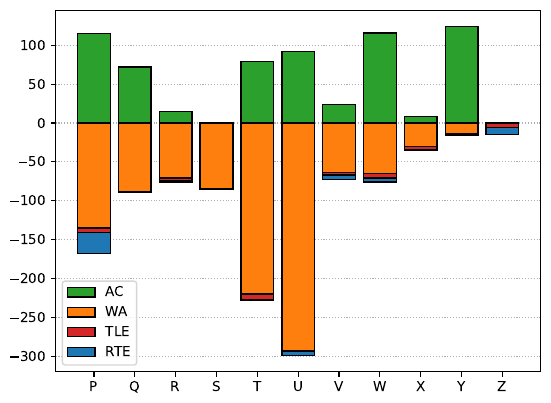
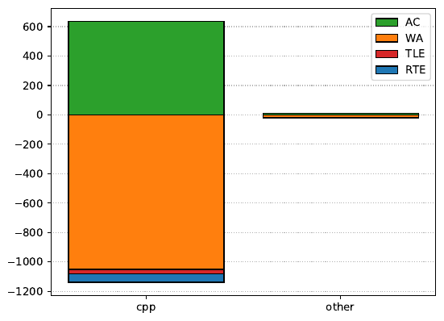

46th ICPC World Finals
Disclaimer This is an unofficial analysis of some possible ways to solve the problems of the 46th ICPC World Finals. They are not intended to give a complete solution, but rather to outline some approach that can be used to solve the problem. If some of the terminology or algorithms mentioned below are not familiar to you, your favorite search engine should be able to help. If you find an error, please send an e-mail to per.austrin@gmail.com about it.
— Per Austrin, Arnav Sastry, Paul Wild, and Jakub Onufry Wojtaszczyk
Congratulations to Peking University
for the title as the 46th ICPC World Champions!
As general statistics, here are two graphs showing the number of submissions made for each problem and for each programming language, respectively. The positive y axis has the number of accepted solutions made, and the negative y axis has the number of rejected solutions made.


C++ is by far the most dominant language. Across the 46th and 47th World Finals (which were held at the same time, about 1% of submissions were made in Python, 0.5% of submissions in Kotlin, and the remaining 98.5% of submissions were in C++. There were no Java submissions.
A note about solution sizes: below the size of the smallest judge and team solutions for each problem are given. These numbers are just there to give an indication of the order of magnitude. The judge solutions were not written to be minimal (though some of us may overcompactify our code) and can trivially be made shorter by removing spacing, renaming variables, and so on. And of course the same goes for the code written by the teams during the contest!
Explanation of activity graphs: below, for each problem a team activity graph is shown. This graph shows the number of submissions of different types made over the course of the contest: the x axis is the time in minutes, the positive y axis has the number of accepted solutions made, and the negative y axis has the number of rejected solutions made.